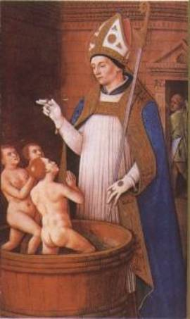

The Legend of the Three Students
Does Jesus save us? Most assuredly! But He also
expects us to be there for others.
As our Lord says in Matthew 25:35-40: “’I was hungry and you gave Me food; I was
thirsty and you gave Me drink; I was a stranger and you took Me in; I was naked
and you clothed Me; I was sick and you visited Me; I was in prison and you came
to Me.’
“Then the righteous will answer Him, saying, ‘Lord, when did we see You hungry and feed You, or thirsty and give You drink? When did we see You a stranger and take You in, or naked and clothe You? Or when did we see You sick, or in prison, and come to You?’
“And the King will answer and say to them,
‘Assuredly, I say to you, inasmuch as you did it to one of the least of these
My brethren, you did it to Me.’”
In this legend, we see how St. Nicholas put this
into practice.
It’s a desperate time. A famine is driving the
people to the edge of starvation. Beef and mutton are extremely scarce and
therefore quite expensive. One innkeeper conceives the idea of filling his
pantry with the fat, juicy corpses of children whom he kidnaps and kills. He
serves these up to his guests in all varieties of nicely cooked dishes and
under all sorts of fancy names.
Nobody can guess how he alone of all the innkeepers
in that area can maintain a table so well supplied with meats (boiled and
roasted), stews, hashes and delicious soups.
During this famine, three young students are
wandering through the woods late at night in search of a place to stay. They
arrive at the aforementioned country inn, and ask the innkeeper for
accommodation. He lets them in, serves them a good meal, and they go to bed.
While they’re asleep, the innkeeper searches their
pockets and finds a large sum of money in gold coins. Prompted by his wife, he
robs and kills them. Then he takes the three bodies, cuts them up, salts the
flesh, and puts it in pickling barrels, to be later sold as meat for pies.
Some time lapses, and then, one day, Nicholas
arrives at the inn disguised as a beggar and asks for accommodation. The
innkeeper ushers him in and starts preparing a meal. Nicholas knows what has
happened: he orders the innkeeper to bring the barrels that contain the bodies
of the boys.
When the innkeeper returns with the barrels, Nicholas
pours out his anger in bitter but righteous words. Vainly the landlord fawns,
cringes and protests that he’s innocent.
Nicholas simply walks over to the barrels where the
bodies of the children have been salted down. He prays to the Lord, makes the
sign of the cross over the barrels and the three boys emerge – back in one
piece! – singing praises to God. He restores them to their mother, a
poor widow, and the fame of this wonderful miracle spreads far and wide. The
innkeeper repents of his deed and gives his life to Christ.
There were other dramatized versions of this miracle
in the twelfth and thirteenth centuries, and hymns of the same period allude to
it.
A version of the story with certain new elements appears
in a sermon long attributed to St. Bonaventure. Here the students are but two
in number. They’re noble and rich. While on their way to Athens to study
philosophy, they stop at Myra to pay their respects to Bishop Nicholas. The
innkeeper, tempted by their wealth, kills them, chops them up like hogs, and
pickles them in a tub. Nicholas, warned by an angel, hurries to the house and
accuses the murderer. With a prayer, he restores the young men to life. This is
the first mention of the pickling-tub in connection with the murder of the clerici. It will also be noticed that
the legend is ascribed to Nicholas’ lifetime.
In the plays of Fleury, the story runs that three traveling scholars, in search of learning, find themselves at nightfall in an unfamiliar part of the country. They beg lodging of an old man at the nearest house. He refuses, gruffly, but the scholars, turning to his wife, suggest that God may reward her hospitality with a son, and she successfully intercedes with her husband, who then bids them enter.
While the scholars sleep, the old man remarks that
the money in their purses might easily be his, and his wife eagerly bids him
draw his sword and kill the boys, as no one will know of the murder. He carries
out her suggestion and kills them.
Soon after this, Nicholas appears as a pilgrim asking shelter for the night. The old man at once asks his wife’s advice, and finding her favorably impressed by the stranger, bids him welcome and offers him anything he wishes for dinner. The Saint, with a glance at the table, declares that none of the dishes suit his taste and asks for fresh meat. Upon the old man’s reply that he has none, Nicholas indignantly accuses him of the crime. The guilty couple asks his mercy, reminding him that their offense is not, after all, unpardonable! The bishop orders the bodies to be brought in and encourages the contrition of the murderous pair. A prayer by Nicholas, to bring the boys to life and to hear the entreaties of the sinners, closes the action.
This story was so popular in England that by the end
of the fifteenth century the expression “St. Nicholas’ clerks” was current,
with the meaning of “poor scholars.”
Thought to Ponder: St. Nicholas, the generous
protector and friend, has long been an object of schoolboy love and gratitude.
The memory of his kindly deeds was kept alive not only in recited story, but in
carved stone and painted wall. The boys themselves sang about them in beloved
songs and enacted them in spirited plays.
But the beneficence of Nicholas was not confined to
the past. The gifts mysteriously bestowed on the eve of the Feast of St.
Nicholas have kept alive the feelings of gratitude, and through the centuries
boys have continued to look to St. Nicholas for aid and protection.
Thought to Discuss around the Dinner Table: How can we fulfill the
Lord’s expectation of us? How can we imitate St. Nicholas in his love for God
and those around him?
Who needs our help during this holy season? The
shut-ins? The elderly? The homeless? The agencies that provide for battered
wives?
Who needs us to stand up for them, to protect them?
To lead them to Christ?
How can we do the same during this Christmas season – and all year round?
The Legend of the Three Students
